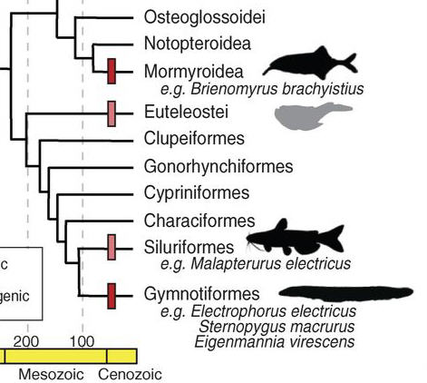

|
|---|
| Fig. 1A. Phylogenetic tree of vertebrate orders and major groups of electric fishes, after Alfaro, et al. |
| Feature Article - July 2014 |
| by Do-While Jones |
Evolutionary spin doctors try to explain how the electric eel, and five other groups of electric fish, evolved their electrifying characteristics independently.
Electric eels are well known for their ability to produce an electric shock. What isn't as well known is that there are five other biological groups of fish that contain at least one member capable of producing electricity. One might suppose that all six groups would have a close common ancestor, from which they inherited this shocking ability. But, according to evolutionists, all six groups happened upon this electrifying skill independently, by accident. Last month, a paper authored by 16 biologists tried to explain how this happened.
Here is the abstract of that article:
|
Little is known about the genetic basis of convergent traits that originate repeatedly over broad taxonomic scales. The myogenic electric organ has evolved six times in fishes to produce electric fields used in communication, navigation, predation, or defense. We have examined the genomic basis of the convergent anatomical and physiological origins of these organs by assembling the genome of the electric eel (Electrophorus electricus) and sequencing electric organ and skeletal muscle transcriptomes from three lineages that have independently evolved electric organs. Our results indicate that, despite millions of years of evolution and large differences in the morphology of electric organ cells, independent lineages have leveraged similar transcription factors and developmental and cellular pathways in the evolution of electric organs. 1 |
"Little is known" about how the same features seem to evolve over and over again in unrelated creatures because it didn't happen. That's why they are at a loss to explain it.
The article begins by saying,
|
Electric fishes use electric organs (EOs) to produce electricity for the purposes of communication; navigation; and, in extreme cases, predation and defense. EOs are a distinct vertebrate trait that has evolved at least six times independently (Fig. 1A). The taxonomic diversity of fishes that generate electricity is so profound that Darwin specifically cited them as an important example of convergent evolution. 2 |
It isn't a recent discovery that many fish that generate electricity are so different that they can't reasonably be placed in the same taxonomic category, which means they can't reasonably be assumed to have inherited the ability from a common ancestor. That's why Darwin claimed they must be "an important example of convergent evolution." Convergent evolution is the belief that because the number of solutions to the problem of survival in a particular environment is so small, diverse creatures in that environment will inevitably stumble upon the same solution through the process of natural selection.
There is no evidence that convergent evolution actually happens! Convergent evolution has never been demonstrated in the laboratory. It has never actually been observed in nature. It is just assumed to have happened because so many creatures without a close common ancestor have the same characteristics. Figure 1A of their report shows this mythical evolutionary relationship.
|
|---|
| Fig. 1A. Phylogenetic tree of vertebrate orders and major groups of electric fishes, after Alfaro, et al. |
Figure 1A is based on the 2009 work of Michael E. Alfaro and his associates. 3 The short line in the upper left corner of the figure represents the unknown common ancestor of all the sixteen biological groups listed at the right side of the figure. The mythical evolutionary timescale goes along the bottom from 600 million years ago at the left, to the present time at the right. Six of the groups listed on the right have silhouettes of representative members of that group which have electric organs.
Let's look at just the bottom right corner of the figure and explain what the figure is trying to convey.
|
 |
The familiar electric eel (Electrophorus electricus) is a member of the group called Gymnotiformes. The Siluriformes have the most similar genetics to the Gymnotiformes. Evolutionists believe this means they must have both evolved from an unknown common ancestor (a "missing link"). Based on the number of genetic differences, and the rate at which genetic mutations seem to occur, they calculate that both groups diverged from an unknown (mythical) common ancestor 100 million years ago. The Characiformes are believed to be most similar to the presumed genetics of the hypothetical ancestor of the Gymnotiformes and Siluriformes. The number of genetic differences, combined with the presumed mutation rate, leads evolutionists to believe that the Characiformes and the missing link between the Gymnotiformes and Siluriformes diverged from yet another unknown common ancestor about 130 million years ago.
So, according to the bottom right corner of the diagram, there was an unknown common ancestor which did not have electric organs that begat two different lines of descent about 225 million years ago. One of those lines of descent led to the Mormyroidea which evolved an electric organ about 90 million years ago. The other line of descent split 200 million years ago, producing the Euteleostei (some of which have electric organs) in one line, and another line leading to the Gymnotiformes and Siluriformes, which didn't evolve electric organs until 100 million years ago.
Looking at the complete diagram, it shows that the Torpediformes independantly evolved electric organs nearly 400 million years ago, and the Rajiformes independently evolved electric organs about 300 million years ago.
Remember, this diagram came from the work of Alfaro and his team, published in 2009. Last month's article by Gallant and his associates does not question this at all. So, working under the false assumption that electric organs evolved six times by chance, they are shocked that all the electric organs seem to have such a similar design!
| Despite these differences in morphology [shape], the three lineages of electric fish studied here share patterns of gene expression in transcription factors and pathways contributing to increased cell size, increased excitability, and decreased contractility. 4 |
They gave a lot of technical detail about how similar the genes are expressed in all these different fish, and came to this conclusion:
|
Our analysis suggests that a common regulatory network of transcription factors and developmental pathways may have been repeatedly targeted by selection in the evolution of EOs, despite their very different morphologies. Moreover, our work illuminates convergent evolution of EOs and emphasizes key signaling steps that may be foci for the evolution of tissues and organs in other organisms. 5 |
We don't disagree with any of their facts--we only disagree with their conclusion.
That is, we agree that genetic analysis shows that if these six lineages did actually evolve from some unknown ancestors, those ancestors did not have electric organs, so their descendants would have had to have evolved these organs late in their supposed evolutionary history. Furthermore, the electric organs in these fish all have the same basic design.
We disagree that natural selection stumbled on the same complex design accidentally six different times. There is no evidence that it happened accidentally.
Electric fish exist--there is no question of that. But their existence does not prove that they evolved. Convergent evolution is their explanation simply because they can't explain it any other way.
| Quick links to | |
|---|---|
| Science Against Evolution Home Page |
Back issues of Disclosure (our newsletter) |
| Web Site of the Month |
Topical Index |
Footnotes:
1
Gallant , et al., Science, 27 June 2014, "Genomic basis for the convergent evolution of electric organs", pp. 1522-1525, https://www.science.org/doi/10.1126/science.1254432
2
ibid.
3
Alfaro, et al., Proceedings of the National Academey of Sciences of the United States of America, 2009, "Nine exceptional radiations plus high turnover explain species diversity in jawed vertebrates", pp. 13410-13414, http://www.pnas.org/content/106/32/13410.full
4
Gallant , et al., Science, 27 June 2014, "Genomic basis for the convergent evolution of electric organs", pp. 1522-1525, https://www.science.org/doi/10.1126/science.1254432
5
ibid.